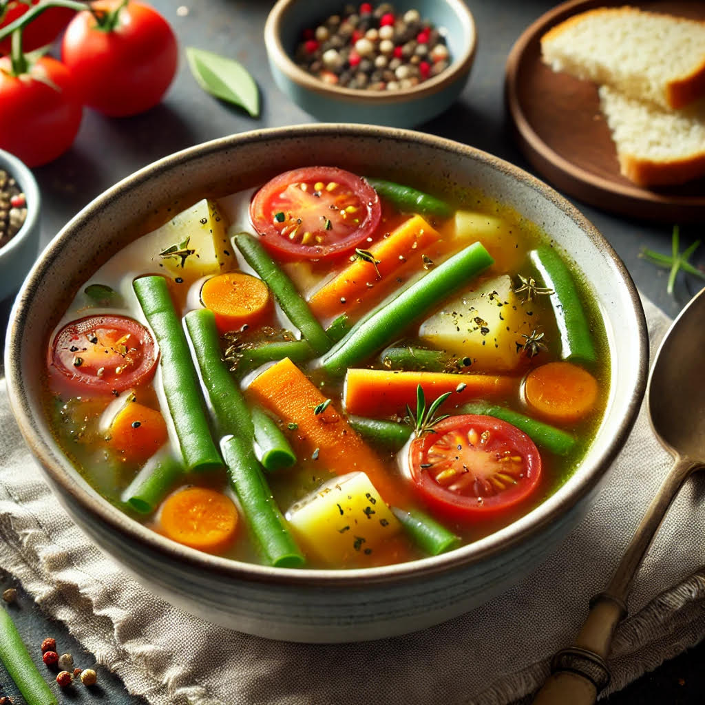

The Power of Vegetables
Delicious Recipies
🥗 1. Fresh Garden Salad
Ingredients:
• 1 cup mixed greens (spinach, lettuce, kale)
• ½ cup cherry tomatoes, halved
• ¼ cup shredded carrots
• Salt and pepper to taste
Instructions:
- In a large bowl, combine all the vegetables.
- Drizzle with olive oil and lemon juice.
- Add salt and pepper, toss, and enjoy!
🜠2. Veggie Stir-Fry
Ingredients:
•1 cup broccoli florets
•½ bell pepper, sliced
•1 small carrot, julienned
Instructions:
- 1. Heat olive oil in a pan over medium heat.
- 2. Add all vegetables and sauté for 5-7 minutes until tender.
- 3. Stir in soy sauce and garlic powder. Serve warm!
🥣 3. Easy Veggie Soup

Ingredients:
• ½ cup chopped carrots
• 1 small potato, diced
• 2 cups vegetable broth
• 1 tsp salt and pepper
Instructions:
- 1. In a pot, bring vegetable broth to a boil.
- 2. Add all vegetables and cook for 15-20 minutes.
- 3. Season with salt and pepper. Enjoy!